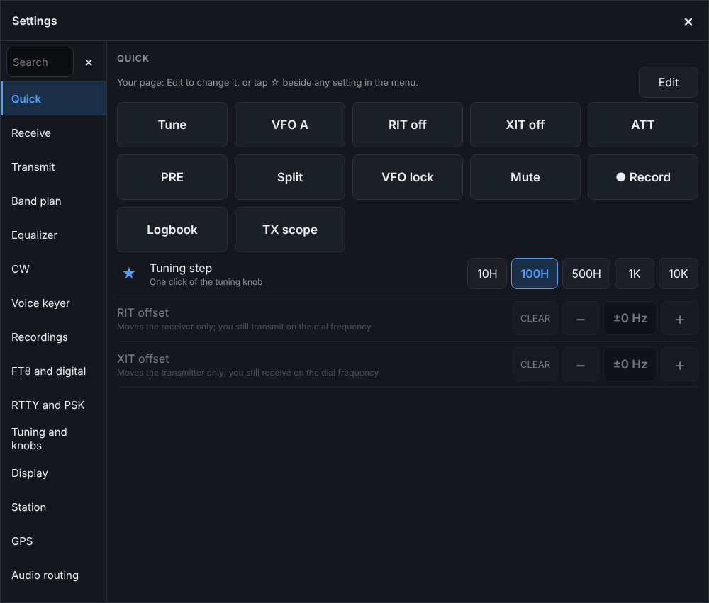
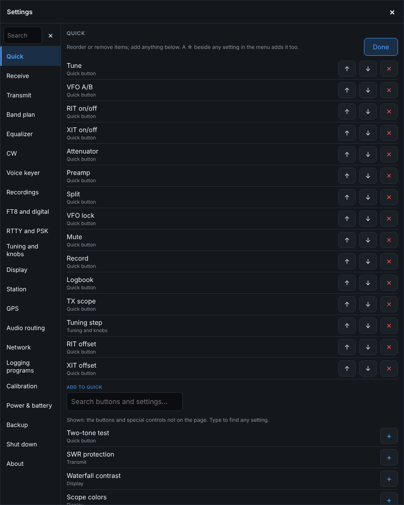

Quick page#
More → Quick is the first page of the settings menu: buttons and settings you reach for often, in the order you choose.

The buttons#
| Button | What it does |
|---|---|
| Tune | sends a carrier at Tune power for Tune time seconds; while it is on, the button and a strip at the top of the menu show the power and SWR (see Transmit) |
| VFO A/B | swaps between the two VFOs |
| RIT | turns receive incremental tuning on and off |
| XIT | turns transmit incremental tuning on and off |
| ATT | each tap steps the attenuator: off, 6, 12, 18 dB |
| PRE | each tap steps the preamp: off, 6, 12 dB |
| Split | receive on the VFO in use and transmit on the other one (on VFO A, transmit on B; on VFO B, transmit on A). Set the TX frequency by switching to the other VFO and tuning, then switch back. The line under the frequency shows split · TX and where you will transmit; PTT, the CW keyer, TUNE and the two-tone test all use it, and the privilege warning checks the TX frequency |
| VFO lock | locks the tuning; in FT8/FT4/FT2 it turns the automatic FT lock off and on |
| Mute | mutes the speaker |
| ● Record | starts and stops a recording (see Recordings) |
| Logbook | opens the logbook |
| TX scope | a floating panel with the transmit audio waveform while you transmit, with the clip level (SSB), 100 % modulation (AM) or full deviation (FM) marked |
Not on the page at first, but available under Edit → Add to Quick: Two-tone test (see Transmit).
RIT#
RIT turns it on and off; − / + on the RIT offset row move the receiver
in 10 Hz steps (hold to run) and Clear sets 0. Only the receiver moves:
the passband on the scope shifts, while the dial marker and your transmit
frequency stay put. The header shows RIT +120 Hz while it is on. Console:
rit on|off|clear|<hz>.
XIT#
XIT is the opposite: only the transmitter moves. XIT turns it on and off;
the XIT offset row works like RIT's (10 Hz steps, hold to run, Clear).
You keep listening on the dial while you transmit the offset away, for
example to call a DX station "up 1" without split. It adds to split: in split
the transmitter goes out on the other VFO plus the XIT offset. Every way of
transmitting uses it (PTT, the CW keyer, TUNE, the two-tone test, the digital
modes), and the privilege warning checks where you will actually transmit.
The header shows XIT +1500 Hz · TX 14.251.50 while it is on. Console:
xit on|off|clear|<hz>; Hamlib z / Z.
RIT, XIT and their offset rows are on the Quick page by default. If you have customized the Quick page, add them with Edit; searching the settings for "rit" or "xit" also finds the offset rows.
Making it yours#
- Tap the ☆ next to any setting anywhere in the menu to add it to Quick (★ means it is already there; tap again to remove it).
- Edit on the Quick page lists what is on it: ↑ ↓ reorder, ✕ removes. Add to Quick underneath searches every button and setting.
- Done saves. The list is kept on the radio (
QUICK), so the touchscreen and every other screen share it.
